Jauna konta izveide un pieslēgšanās sistēmai
Pārlūkprogrammā dodieties uz siltumnīcas sistēmas adresi un noklikšķiniet uz "Reģistrēties" vai izmantojiet tiešo saiti:
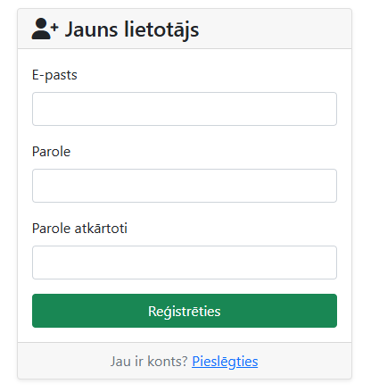
Ievadiet savus datus šādos laukos:
| Lauks | Apraksts | Statuss |
|---|---|---|
| E-pasts | Derīga e-pasta adrese, kas tiks izmantota kā lietotājvārds pieslēgšanās laikā | Obligāts |
| Parole | Izvēlieties drošu paroli (vismaz 8 rakstzīmes) | Obligāts |
| Parole atkārtoti | Ievadiet to pašu paroli vēlreiz apstiprināšanai | Obligāts |
Ja norādītā e-pasta adrese jau ir reģistrēta, sistēma parādīs kļūdas paziņojumu. Katrs e-pasts var tikt izmantots tikai vienreiz.
Noklikšķiniet uz pogas "Reģistrēties". Ja visi dati ir ievadīti pareizi, sistēma automātiski novirzīs jūs uz pārskatu (dashboard).
Veiksmīgas reģistrācijas gadījumā jūs automātiski tiekat pieslēgts un novirzīts uz siltumnīcas pārskata lapu.
Nākamajās reizēs izmantojiet pieslēgšanās lapu:
Ievadiet reģistrēto e-pastu un paroli, pēc tam noklikšķiniet uz "Pieslēgties".
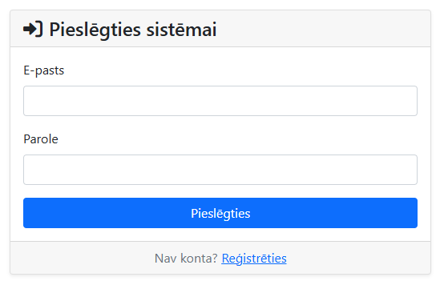
Jauna siltumnīcas objekta pievienošana sistēmai
Augšējā navigācijas izvēlnē noklikšķiniet uz "Iestatījumi" vai dodieties tieši uz:
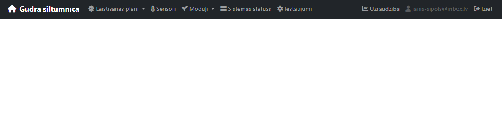
Noklikšķiniet uz zaļās pogas "Pievienot siltumnīcu" augšējā labajā stūrī. Ekrānā parādīsies modāls logs ar siltumnīcas datu veidlapu.
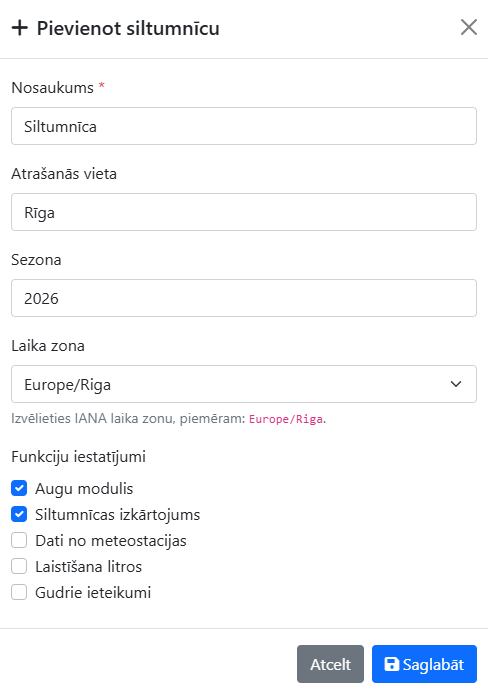
| Lauks | Apraksts | Statuss |
|---|---|---|
| Nosaukums | Siltumnīcas nosaukums, piemēram, Tomātu siltumnīca Nr. 1 |
Obligāts |
| Atrašanās vieta | Fiziskā adrese vai apraksts, piemēram, Rīga, dārza māja |
Neobligāts |
| Sezona | Pašreizējā audzēšanas sezona, piemēram, Vasara 2026 |
Neobligāts |
| Laika zona | Siltumnīcas laika zona, piemēram, Europe/Riga |
Neobligāts |
Siltumnīcas veidlapā ieslēdziet tos funkcionalitātes moduļus, kurus plānojat izmantot:
| Modulis | Apraksts |
|---|---|
| Augi | Iespējo augu reģistrāciju, izsekošanu un pārvaldību siltumnīcā |
| Izkārtojums | Aktivizē grafisko siltumnīcas izkārtojuma karti augu pozicionēšanai |
| Meteostacija | Iespējo temperatūras un mitruma sensoru datu attēlošanu (eksperimentāls modulis, drīzumā tiks ieviests) |
| Laistīšana litros | Ļauj norādīt ūdens daudzumu mililitros papildus laika ilgumam (eksperimentāls modulis, drīzumā tiks ieviests) |
| Gudrie ieteikumi | Iespējo automātiskos laistīšanas ieteikumus uz datu bāzes pamata (eksperimentāls modulis, drīzumā tiks ieviests) |
Moduļus var iespējot vai atspējot arī vēlāk, rediģējot siltumnīcas iestatījumus lapā /setup/.
Noklikšķiniet uz pogas "Saglabāt". Jaunā siltumnīca parādīsies siltumnīcu sarakstā un automātiski tiks iestatīta kā aktīvā siltumnīca.
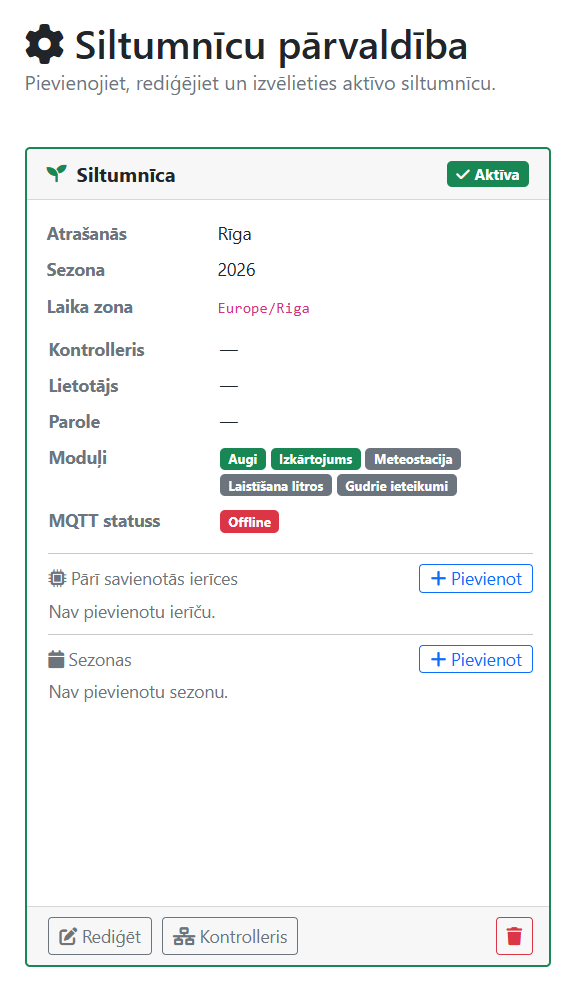
Kontrollera savienojuma iestatīšana, ierīču pievienošana un sezonas pārvaldība
Lapā /setup/ atrodiet vēlamās siltumnīcas karti un noklikšķiniet uz "Rediģēt" vai "Konfigurēt kontrolleri".
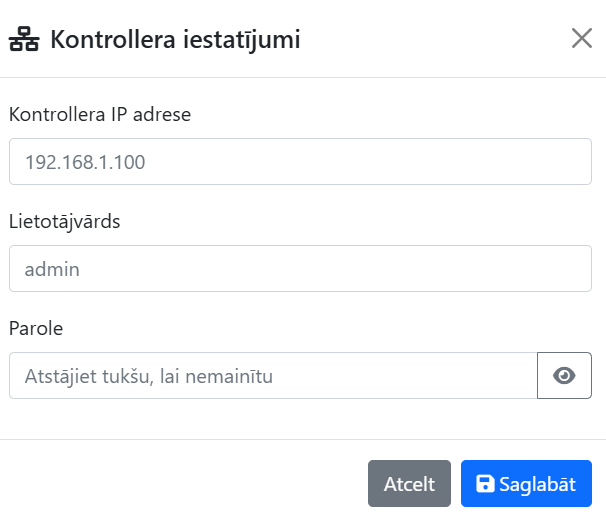
| Lauks | Apraksts | Piemērs |
|---|---|---|
| Kontrollera IP | Raspberry Pi vai vārtejas IP adrese lokālajā tīklā | 192.168.8.100 |
| Lietotājs | MQTT brokera vai kontrollera lietotājvārds | admin |
| Parole | Kontrollera savienojuma parole | •••••••• |
Kontrollerim jābūt pieejamam tajā pašā lokālajā tīklā. Pārbaudiet MQTT statusa indikatoru siltumnīcas kartē — tas parāda savienojuma stāvokli reāllaikā.
Svarīgi: Ierīce jāaktivizē pāru savienošanas režīmā pirms savienošanas ar sistēmu. Skatiet ierīces iepakojumu vai manuāli instrukcijām par to, kā ieviest pāru savienošanas režīmu.
Siltumnīcas kartē noklikšķiniet uz "Pievienot +" sadaļā "Pārī savienotās ierīces". Parādīsies ierīces pievienošanas panelis.
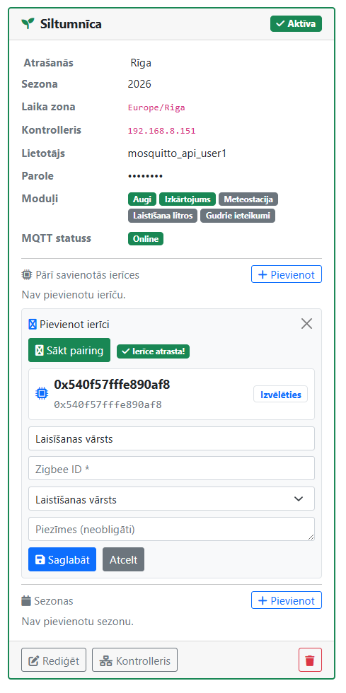
| Lauks | Apraksts |
|---|---|
| Zigbee ID | Ierīces unikālais heksadecimālais identifikators, piemēram, 0x540f57fffe890af8 |
| Nosaukums | Saprotams nosaukums, piemēram, Laistīšanas kontrolieris |
| Ierīces tips | Izvēlieties no: Laistīšanas kontrolieris, Temperatūras sensors, Mitruma sensors |
Zigbee ierīces ID var atrast ierīces iepakojumā vai Zigbee2MQTT tīmekļa saskarnē. Tas vienmēr sākas ar 0x.
Noklikšķiniet uz "Saglabāt ierīci". Ierīce parādīsies siltumnīcas kartē ierīču sarakstā ar atbilstošu ikonu un Zigbee ID.
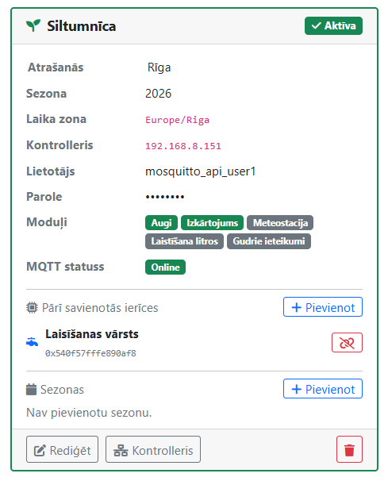
Siltumnīcas kartē atrodiet sadaļu "Sezonas" un noklikšķiniet uz "Pievienot sezonu". Ievadiet sezonas nosaukumu (piemēram, Vasara 2026) un datumu diapazonu.
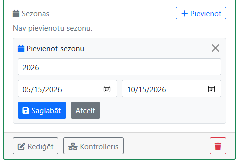
Sezona ļauj grupēt augus un laistīšanas plānus pa audzēšanas periodiem, nodrošinot labāku pārskatāmību gadu gaitā.
Automātiskā laistīšanas grafika definēšana ar cikliem
No pārskata lapas noklikšķiniet uz pogas "Jauns plāns", vai navigācijas izvēlnē izvēlieties Laistīšana → Jauns plāns. Varat arī pārvietoties tieši uz:
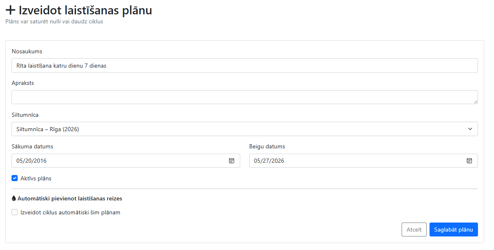
| Lauks | Apraksts | Statuss |
|---|---|---|
| Nosaukums | Plāna aprakstošs nosaukums, piemēram, Rīta laistīšana – jūnijs |
Obligāts |
| Apraksts | Brīvs teksta lauks papildu piezīmēm | Neobligāts |
| Siltumnīca | Izvēlieties siltumnīcu, kurai piesaistīt šo plānu | Neobligāts |
| Sākuma datums | No kura datuma plāns ir spēkā | Neobligāts |
| Beigu datums | Līdz kuram datumam plāns ir spēkā | Neobligāts |
| Aktīvs plāns | Atzīmējiet, ja plānam jādarbojas automātiski | Noklusējums: ✓ |
Atzīmējiet izvēles rūtiņu "Izveidot ciklus automātiski šim plānam". Tiks parādītas papildu opcijas laistīšanas ciklu iestatīšanai.
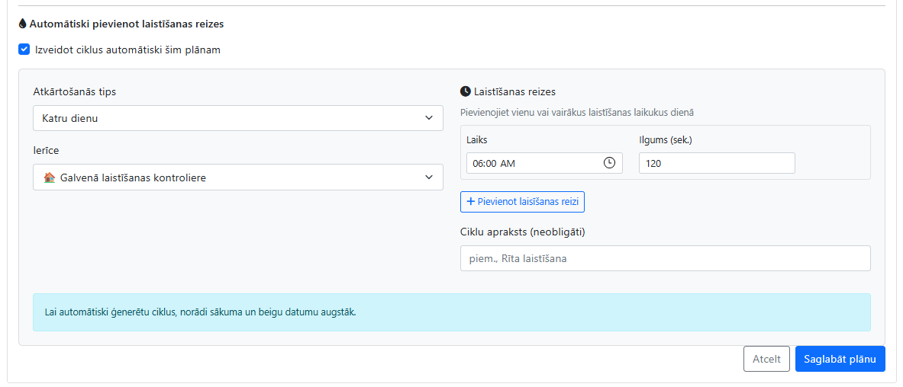
| Lauks | Apraksts | Iespējas |
|---|---|---|
| Atkārtošanās tips | Cik bieži laistīšana tiks veikta |
Katru dienu Ik pēc N dienām Katru nedēļu konkrētā dienā |
| Intervāls (dienās) | Redzams tikai "Ik pēc N dienām" tipam; vērtība 1–7 | 1 – 7 |
| Nedēļas diena | Redzams tikai "Katru nedēļu" tipam | Pirmdiena – Svētdiena |
| Ierīce | Zigbee laistīšanas kontrolieris, kas izpildīs ciklu | Pieejamās ierīces no siltumnīcas |
Sadaļā "Laistīšanas reizes" norādiet vienu vai vairākus laistīšanas laikrakstus dienā:
| Lauks | Apraksts | Piemērs |
|---|---|---|
| Laiks | Laistīšanas sākuma laiks (HH:MM formātā) | 06:00 |
| Ilgums (sek.) | Cik ilgi darbosies laistīšana sekundēs | 60 (1 minūte) |
Lai pievienotu papildu laistīšanas laiku, noklikšķiniet uz "+ Pievienot laiku".
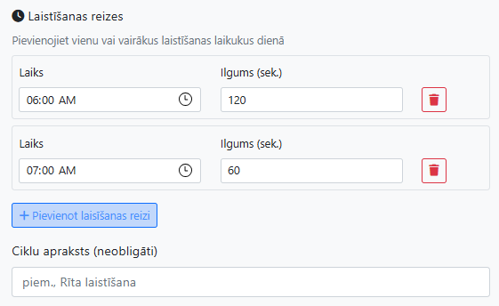
Noklikšķiniet uz "Saglabāt plānu". Sistēma automātiski ģenerēs laistīšanas ciklus visam norādītajam datumu diapazonam un novirzīs uz plāna detaļu lapu.
Plāna detaļu lapā varat pārskatīt visus ģenerētos ciklus, mainīt to laikus, dzēst nevajadzīgos vai manuāli pievienot jaunus.
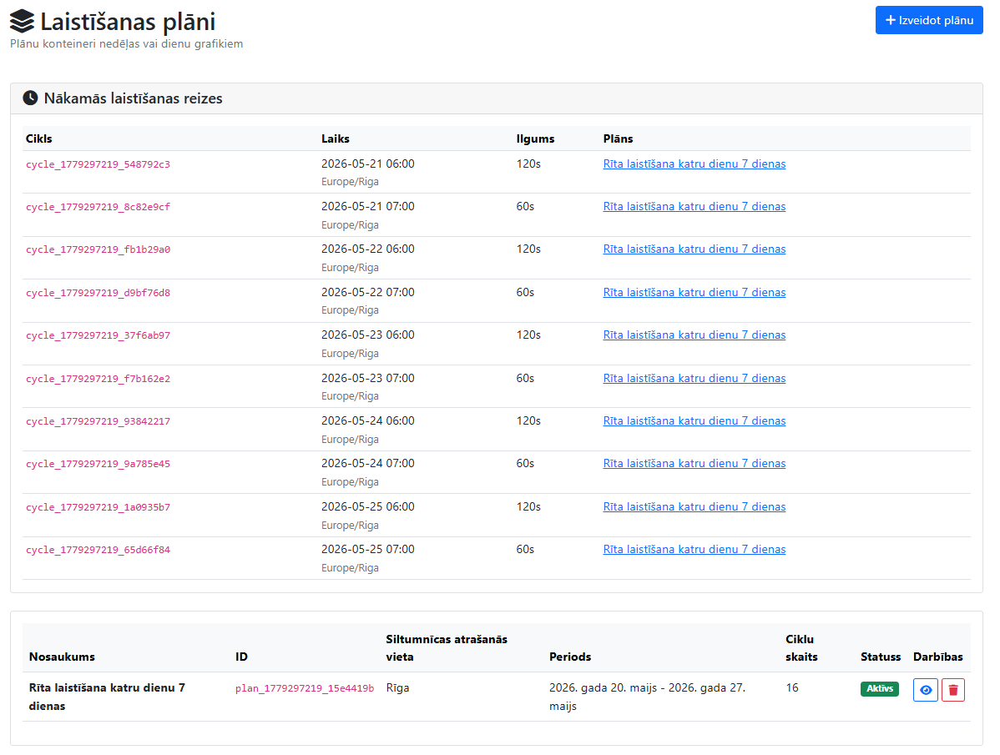
Augu pievienošana siltumnīcai, izsekošana un izkārtojuma karte
Navigācijas izvēlnē izvēlieties Augi → Pievienot augu, vai izmantojiet tiešo saiti:
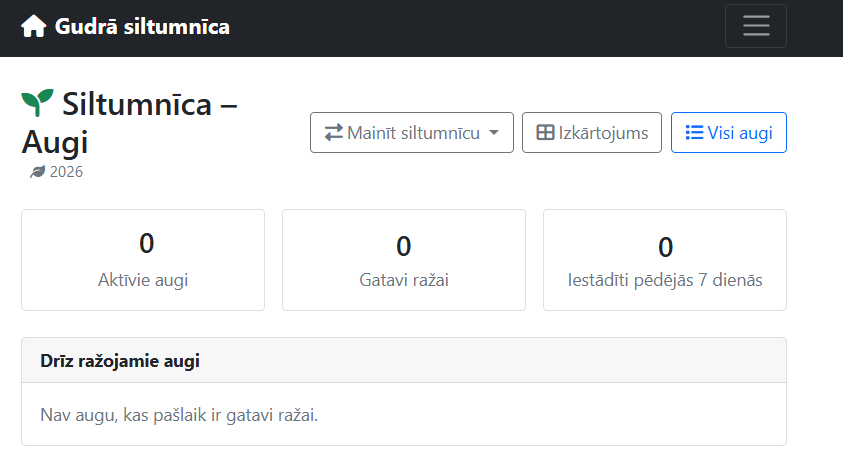
| Lauks | Apraksts |
|---|---|
| Siltumnīca | Izvēlieties siltumnīcu, kurā augs tiks pievienots. Atstājot tukšu — tiek izmantota aktīvā siltumnīca. |
| Sezona | Izvēlieties audzēšanas sezonu. Atstājot tukšu — tiek izmantota siltumnīcas aktīvā sezona. |
| Lauks | Apraksts | Statuss |
|---|---|---|
| Nosaukums | Auga nosaukums, piemēram, Tomāts |
Obligāts |
| Šķirne | Konkrētā šķirne, piemēram, Cherry vai Beefsteak |
Neobligāts |
| Stādīšanas datums | Datums, kad augs tika iestādīts | Obligāts |
Ievadiet rindas un kolonnas numuru, kas atbilst auga fiziskajai vietai siltumnīcas telpā. Šī informācija tiks izmantota grafiskajā izkārtojuma kartē.
| Lauks | Apraksts | Statuss |
|---|---|---|
| Rinda | Rindu numurs siltumnīcas režģī (sākas ar 1) | Obligāts |
| Kolonna | Kolonnas numurs siltumnīcas režģī (sākas ar 1) | Obligāts |
| Atrašanās apraksts | Brīvs apraksts atrašanās vietai, piemēram, Austrumu sienas puse, 3. rinda |
Neobligāts |
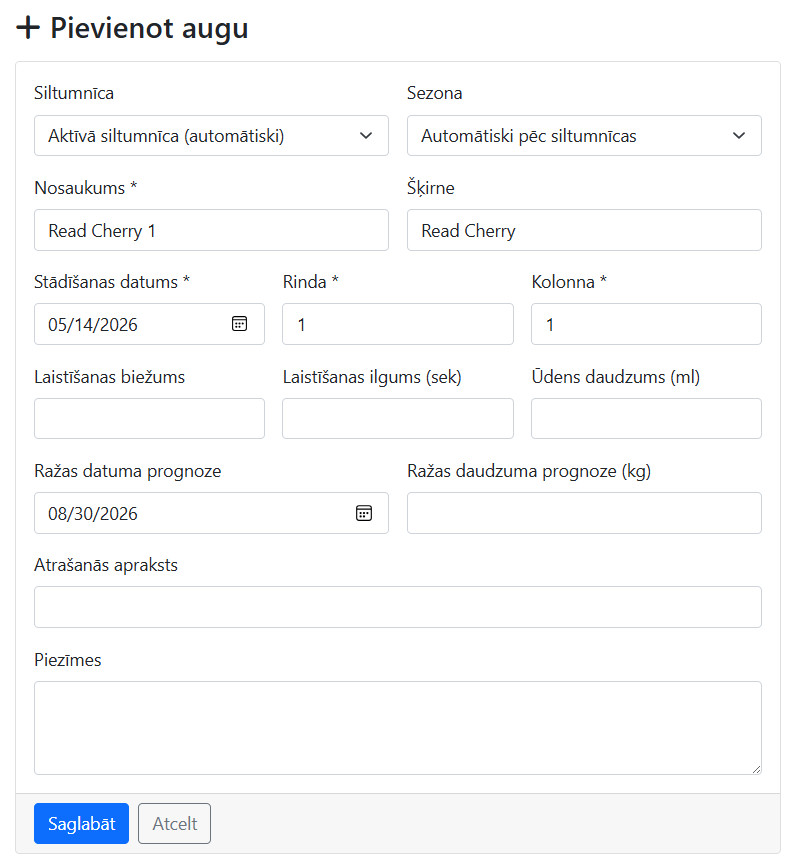
| Lauks | Apraksts |
|---|---|
| Laistīšanas biežums | Cik reizes dienā augs jālaista (noklusējums: 1) |
| Laistīšanas ilgums (sek.) | Cik ilgi laistīt vienu reizi sekundēs (noklusējums: 300) |
| Ūdens daudzums (ml) | Ūdens daudzums mililitros vienā laistīšanas reizē (neobligāts) |
| Ražas datuma prognoze | Paredzamais ražas novākšanas datums |
| Ražas daudzuma prognoze (kg) | Paredzamais ražas apjoms kilogramos |
Eksperimentālās un neobligātās funkcijas: lauki "Laistīšanas biežums", "Laistīšanas ilgums (sek.)", "Ūdens daudzums (ml)", "Ražas daudzuma prognoze (kg)" un "Atrašanās apraksts" ir eksperimentāli un neobligāti. Ja šie lauki netiek aizpildīti, augu var saglabāt arī bez tiem.
Noklikšķiniet uz "Saglabāt". Augs tiks pievienots siltumnīcai un būs redzams augu sarakstā un izkārtojuma kartē.
Pievienojot vairākus augus, tie visi tiks parādīti grafiskajā izkārtojuma kartē atbilstoši norādītajiem rindas un kolonnas numuriem.
Dodieties uz augu sarakstu:
Sarakstā redzami visi aktīvie augi ar nosaukumu, šķirni, stādīšanas datumu, atrašanās vietu un laistīšanas iestatījumiem. Katru augu var atvērt, rediģēt vai deaktivizēt.
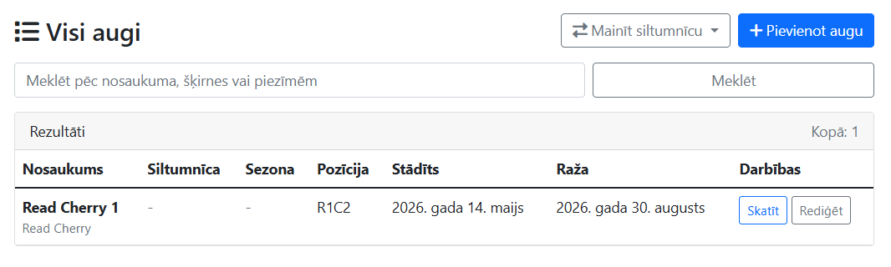
Dodieties uz izkārtojuma lapu:
Interaktīvā režģa karte parāda visus pievienotos augus to faktiskajās pozīcijās. Kartē var:
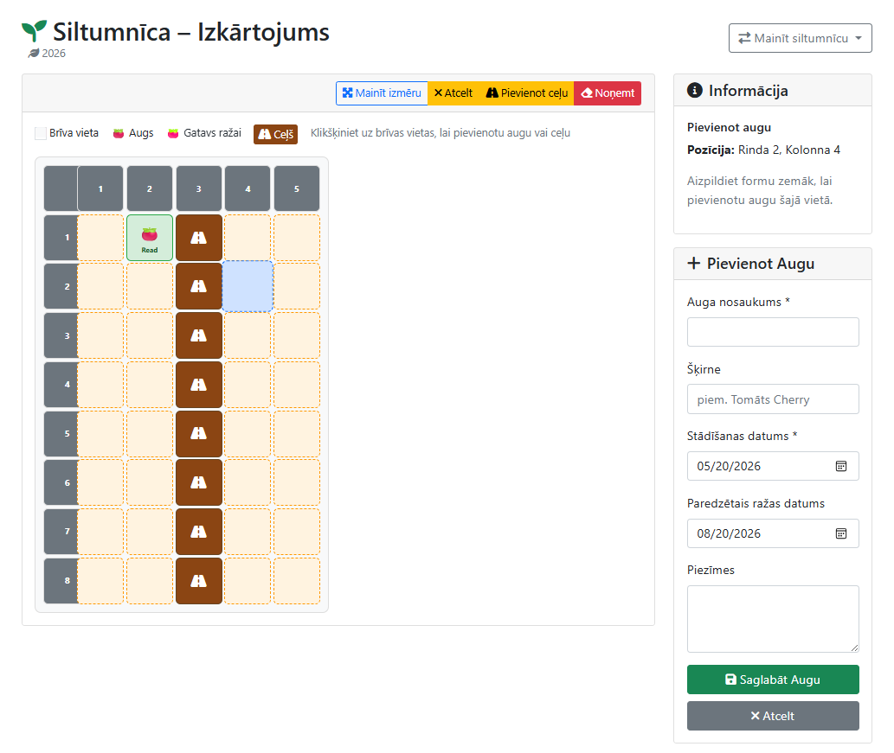